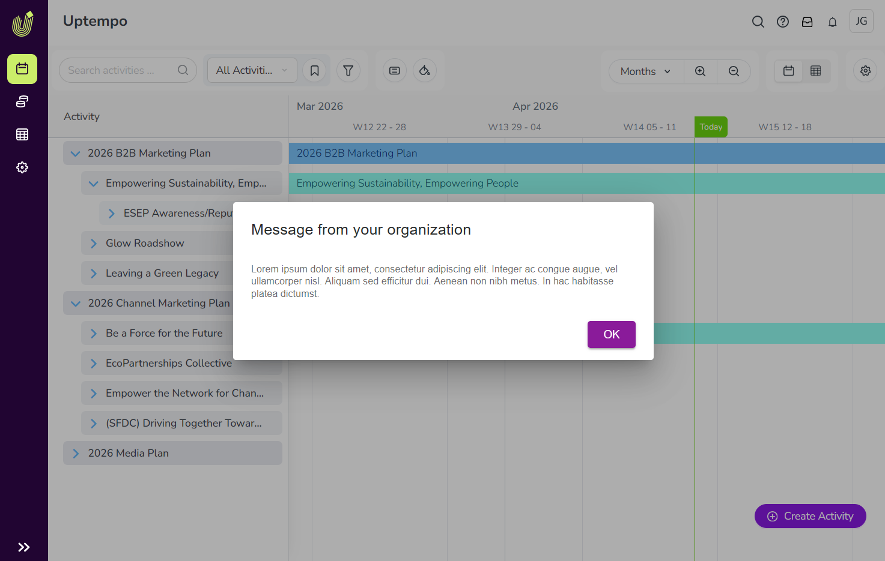
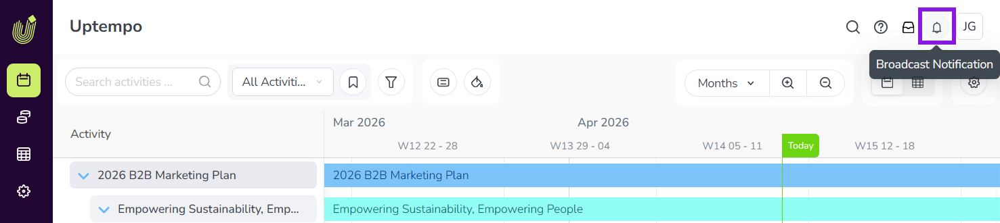
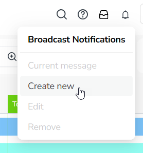
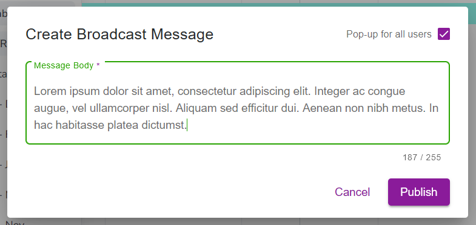
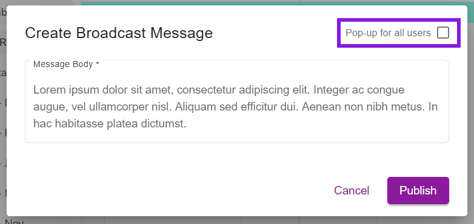
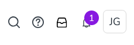

Broadcast in-app messages to your organization
As an administrator, you can use Broadcast Notifications to display short messages to all users in your organization. By default, these messages are automatically displayed to each user the next time they sign in to Uptempo:
{kind=link}

Broadcast Notifications are useful for communicating important or time-sensitive information about your Uptempo instance. For example, you can use them to keep your marketing teams informed about changes in your Uptempo instance, or to communicate key dates and deadlines.
Create and manage Broadcast Notifications
Before you begin
This functionality is available in Uptempo 2.0 instances for all packages.
To configure this functionality, you must have administrator access to your Uptempo instance.
Create Broadcast Notification messages
You can create one Broadcast Notification message at a time. If you create a new message while there is already an existing message, the active message will be removed and replaced with the new message.
Create and publish a Broadcast Notification message
On any page in Uptempo, click the Broadcast Notification button in the page header to open the Broadcast Notifications menu:

Click Create new to open the Create Broadcast Message dialog:

Enter your message into the Message Body field:

Optional: By default, the message is automatically displayed to all users the next time they sign in. To change this behavior, deselect the Pop-up for all users option:

When this option is turned off, a message notification badge is displayed on the Broadcast Notification button in the page header:

To view the message, users must click the Broadcast Notification button.
To save and display your new message, click Publish.
{kind=link}
Your Broadcast Notification message is published, and is displayed to all users in your organization.
Edit Broadcast Notification messages
After you have published a Broadcast Notification message, you can make changes to it at any time.
Edit a published Broadcast Notification message
On any page in Uptempo, click the Broadcast Notification button in the page header to open the Broadcast Notifications menu.
Click Edit to open the Edit Broadcast Message dialog.
Use the Message Body text field to make changes to the message.
To save your changes and publish the edited message, click Save.
Users who view the message will now see the edited version.
Remove Broadcast Notification messages
You can remove a published Broadcast Notification message at any time to stop displaying it.
Remove a published Broadcast Notification message
On any page in Uptempo, click the Broadcast Notification button in the page header to open the Broadcast Notifications menu.
Click Remove.
To stop displaying the published message, click Remove in the confirmation dialog.
The Broadcast Notification is removed with immediate effect, and is no longer visible or accessible to any user in your Uptempo instance.